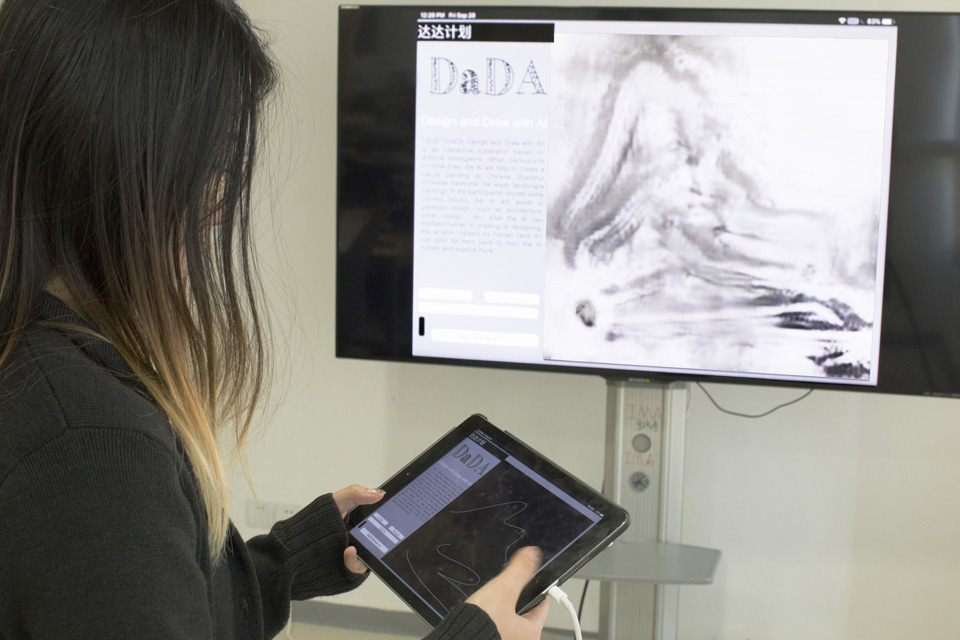
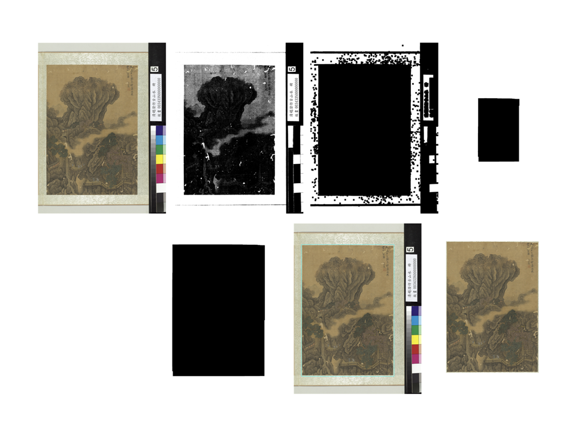

Shanshui-DaDA
October 2018

“Shanshui-DaDA” is an interactive installation based on artificial intelligence. When participants scribble lines and sketch the landscape, the AI will help to create a Chinese Shanshui painting.
Here is a short documentation video:
Introduction
"Shanshui-DaDA" is trained with "CycleGAN" and wrapped with a web-based interface, where participants can sketch on and later see the real-time generated paintings. If the participant sketches the landscape in his/her imagination with lines on the front interface, the "Shanshui-DaDA" will assistant to create a Chinese Shanshui painting and present in the display.
“Shanshui” literally means "mountain and water", also known as literati painting, it's is an East Asian type of brush painting of Chinese origin that uses ink and involves natural landscape. As a key element of what Chinese calls literati arts — or amateur arts of the scholars, Shanshui painting used to be along with their education, the Chinese scholars were all trained in this forms of fine arts. This art form is, in a long history, an essential part of the spiritual life of the entire community of ancient Chinese intellectuals. But the tradition is vanishing. "DaDA" refers to “Design and Draw with AI”, explains the goal of exploring the possible role of artificial intelligence in (traditionally human-oriented) creative processes -- such as drawing and design. I choose “Shanshui” - this unique eastern traditional art form to train “Shanshui-DaDA”, commit to enhance modern people, especially those have grown up in eastern culture, with the ability to easily use “Shanshui” as an expressive medium and to enrich their spiritual life.
Here is a collection of some generated "Shanshui" co-created by participants and "Shanshui-DaDA":
Shanshui co-created by Participants and Shanshui-DaDA:
Generated "Shanshui" Collection.
With the 24 selected "Shanshui" co-created by participants and Shanshui-DaDA, I handcrafted this Shanshui collection book with my girlfriend's help. Two of us spent eight hours on this, which is kind of interesting. The arttificial intelligence is more on the creative side during the production of the painting collection, while two human labor handcrafted the physical copy. The book follows the traditional "Shanshui" collection design- "CeYe" which usually uses to present small scale (comparing to scrolls) "Shanshui".
Documentation
"Shanshui-DaDA" is trained with "CycleGAN" on 108 Shanshui paintings collected from online open data. And the trained machine learning model is then wrapped with a client-sever system, where participants can sketch on and later see the real-time generated paintings on the front interface - my iPad 2018. And a node server and the machine learning model are all running on a cloud base linux server.
1.Dataset.
To train "Shanshui-DaDA" on Shanshui painting task, I collected 108 Shanshui painting from the National Palace Museum open data. All are masterpieces from ancient Chinese literati and a list of all paintings used in this project is here:
108 Shanshui paintings collection from the National Palace Museum:

2.Data Processing.
All the paintings collected are with frames, I applied several computer vision techniques to crop the actual painting out, here is an example explains the process (Some irregular paintings are manually processed).
Binarize --> Erode with kernel a --> Dilate with kernel b --> Erode with kernel b --> Crop the marked area:

Shanshui painting varies in aspect ratios, and the long scrolls can be either horizontal or vertical. But the input training data are supposed to be the same size, thus I cropped all the paintings into small squares to both uniform the aspect ration and obtain the same input size. And I used a canny filter to generate the edge as the "hand-sketch" data. 1230 pairs of data are generated through this process.
Crop one painting into multiple squares and generate the paired "hand-sketch" data:

3.Train the Shanshui-cycleGAN.
I trained this Shanshui-cycleGAN on a Linux server with 8 GTX 1080Ti graphics cards for around 20 hours. There are very good explanations in how to train and test cycleGAN in its official repo, it's their amazing work and opensource spirit made this project possible. Here is a visualization of the iteration of Shanshui-DaDA in 200 epochs.
4. Wrap up the trained Shanshui-cycleGAN.
After tunning and training the Shanshui-cycleGAN several times, finally a network that can produce decent artworks is alive! I then wrapped the trained network with a client-server based application. An interface programmed with P5.js runs on my iPad, it inputs hand-sketch and also displays the generated output painting; A Linux server runs backend in the cloud, the node program on the server handles all the server-client communication and also executes the machine learning algorithm commands to generate Shanshui painting.
The iPad interface:

5.Some results.
Shanshui-DaDA(First Demo with Participants):
Here is another longer video demonstrates more participants draw and play with "DaDA", it's interesting to see how people from different cultures understand and draw landscape as well as Shanshui painting.
Shanshui-DaDA at IMA Potluck, NYU Shanghai:
Acknowledgement
There are many previous works inspired and contributed to this project.
1.cycleGAN: Unpaired Image-to-Image Translation using Cycle-Consistent Adversarial Networks.
This is the essential machine learning algorithm/software used in this project. It's also their open-source project made it easy to train and test the machine learning model.
2.Invisible City.
This project inspired me the idea of using a client-server system to implement the interactive format, as well as to set it up with an iPad and cloud base linux server. The backend node.js code in my project also benifited much from this project.
3.The National Palace Museum Open Data.
All Data to train "Shanshui-DaDA" is from here.
4.Video Credits.
Thanks my friend and co-worker Cindy on the video shooting and editing.